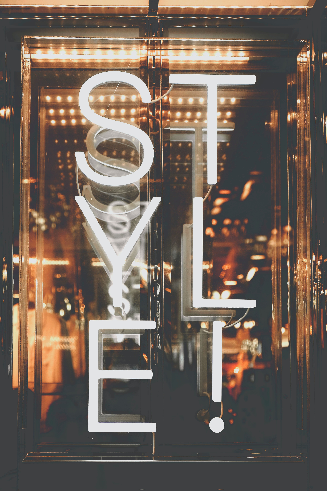
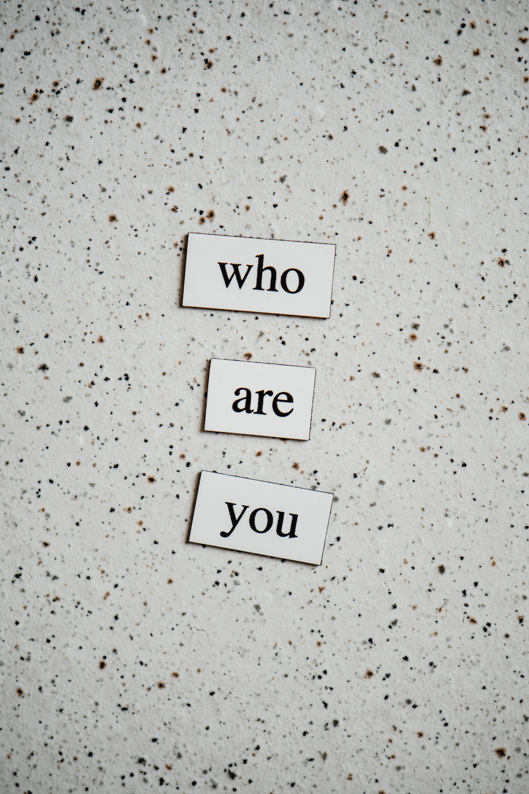

Need help putting your ideas together?
Let's be honest — not everyone is well-equipped enough to have an idea and then realize it. Sometimes you need a bit of assistance getting things done (or started!) and that's why I'm here. But you may still be fuzzy on the details needed to get the process going. If so, here are some tips to help you out.
Purpose
As with most things in life, jumping right into a project is not the best idea.
Not to throw shade at Nike, but there's no telling how much time, effort, and brain power
you can end up wasting if you “just do it” — you need a game plan.
 So, your first step
in any new design project is to plan your planning.
So, your first step
in any new design project is to plan your planning.
No. Really! Try to identify what you want to acccomplish and why — like reaching a
different demographic, showcasing your skills, creating a digital space for your
loved ones — and the how will come a bit easier. If you want a place where employers
can find your work, try a portfolio! If you want to share your passions with the world
on a frequent basis, blogging might be for you. Selling items? An online store may be the
perfect fit.
By identifying the purpose of your new project, you are better equipped to tackling the
tasks that come with it. For sales, that will be taking product images and setting price points
— for blogging, it's determining discussion topics, identifying post frequencies, and setting
aside time for research. From here, you can decide the scope of your project and estimate the time you
may need to get things done. If you're working with someone to help bring your idea to life,
identifying your purpose and scope will aid them tremendously with getting as close to your ideal
content as possible in a shorter amount of time!
Structure
Great! You've figured out what you'd like to create, now the focus should be how
to bring that to fruition. Do you want to go with a standard top-down approach or
a left-to-right orientation? Would you prefer the content to be laid out like a
collage or a grid? When it comes to the structure of your content,
the sky is pretty much the limit. But because your ideas may be just as endless, it
helps to try narrowing things down.
 First, identify the content theme you want for a specific page, like how-to videos,
professional photos, products, or blog posts. Then, choose how you would like to format
those items. To make things easier, you may want to try drawing how you would like
those elements laid out on your page. Doing this will help you conceptualize how you want
the page to look and feel. Finally, repeat the first two steps for any subsequent pages.
First, identify the content theme you want for a specific page, like how-to videos,
professional photos, products, or blog posts. Then, choose how you would like to format
those items. To make things easier, you may want to try drawing how you would like
those elements laid out on your page. Doing this will help you conceptualize how you want
the page to look and feel. Finally, repeat the first two steps for any subsequent pages.
Keep in mind that your web pages don't have to look the same, but you also don't want to make it hard for your users to navigate the site from page to page. So, simplify your navigation and get creative with everything else!
Brand Guide
By now you've got most of your your brain child down to a science, but something is still missing — color! Okay, so not just the colors: there's also the copy, font, mood, and branding. All of this can be placed in a neat little package called a “Brand Guide” which is essentially a document that specifies how your brand should present itself. You can add examples, make the whole thing look the way you want your brand to feel, or even put do's and dont's! Yes, building a brand guide seems like a lot — and sometimes, it can be — but it doesn't have to be. We'll simplify the process by covering its main components: aesthetic, memorability, and mood.
Aesthetic
The first thing most people notice when they look at a flyer, business card, or webpage is the content's overall look — and that's valid! Appearance is an introduction to your brand, so you want your audience to like what they see. And if aesthetics are a first impression, why not make it an awesome one? To do so, you'll want to focus on the two major components to your brand's aesthetic: your color palette and your typography.
Color Palette
When you think of color palette, you probably envision an artist sitting at their easel waiting
to create a masterpiece or art class from grade school. And that's perfect, because that's what
you should be thinking of!
Now, I won't tell you to focus heavily on color theory (although,
seriously — do incorporate color theory) but, I will tell you to pick at minimum
two or three colors (excluding black and white, if possible) that you want to represent
your brand. So, yes — color theory will absolutely play a role here whether you
go for primary, complementary, or monochromatic colors, but the focus should mostly be on
one premise, “do these colors catch the eye and do they embody my brand?”
Colors have their meanings and moods that they carry with them as standalones, which can be accentuated or redefined when combined with others — do remember that while picking your palette!
Typography
Now we're getting to the good stuff — fonts! I won't bore you too much with the
specifics, but essentially your typography will be the font family and size, letter spacing
and line height, text arrangement, and a few other factors that go into branding.

It may seem like a small matter, but typography (done properly) can be the one thing people
remember most about your brand. Done incorrectly, people will still remember you, but for all
the wrong reasons: a simple image search for “letter spacing fails” will explain
why …
No matter what you do, the font or fonts you select should be something that adds value to your
brand as you will be reusing it on all your media including business cards, flyers, and websites.
So be sure to pay extra attention to the sizing, because that will change between print and digital
mediums.
When choosing fonts, there are five major font types: serif, san-serif, script, handwriting, and monospace. Consider how each will look with your signs and logos before committing just to be on the safe side.
Memorability
Fall Out Boy may have had something when they sang, “remember me for centuries” because that is exactly what you want to do when creating your brand. You want people to remember what your brand is and what you do so that you can grow your customer base. While there are quite a few things you can do with your branding to capture your audience’s attention and linger in their memories, we'll only focus on two components: logos and names.
Logo
Logos are pretty prevalent in society to the point where we almost associate them
to the company faster than its own name. Think Nike, Apple, Puma, Google, Starbucks, and
Target — they all have iconic logos, all of which I'm sure popped into your head
as you were reading this list. The reason why? Logos are entities unto themselves, so you
can easily set a logo where you would normally place the brand name if the brand has
been established well enough (or if, like Levi's, your name is actually part of
the logo).
 Logos are incorporated in the "first impression" described above, because they function like
your brand's "face". So, when you are coming up with a logo, you really want to focus on how
your audience will see you and your brand. Choose how you would like to introduce yourself to the
world: either take from the name or choose something symbolic.
Logos are incorporated in the "first impression" described above, because they function like
your brand's "face". So, when you are coming up with a logo, you really want to focus on how
your audience will see you and your brand. Choose how you would like to introduce yourself to the
world: either take from the name or choose something symbolic.
Come up with more than one logo because depending on the medium and scaling, your original idea may not be as visible as you'd like. Play around with your logo and try resizing it. If certain elements in your logo become hard to distinguish (like a icon in a browser tab), then you may need to come up with a simpler logo for that size specifically.
Name

Speaking of names, if your logo is your face, then your name is your identity. This is your
official “Hello!” to the world, so pick it carefully. Consider whether you want the
brand name to reflect what you do specifically like uBreakiFix, to be someone's name like Abercrombie
& Fitch, or to be more abstract yet memorable like BlackBerry.
Just keep in mind that you may not want to make your name too long or your audience may truncate it
for you!
Mood
The mood of your brand is how you interact with your audience — it's your brand's "personality". And honestly, it's the best tie-in for all your brand's other elements. The images, the name, the logos, the typography, the colors — all of these are a part of the mood you set for your brand. But there is one thing that hasn't been covered just yet: your voice.
Voice
 Your brand's voice is really the copy you use to communicate to your audience. Sales messages,
text in an email, quips on a flyer — these are all your voice. The goal is to keep it consistent
across all mediums, so you should choose how you want to come across. Is your brand encouraging,
friendly, warm, empowering? Whatever you choose, it should permeate every aspect of your business.
In fact, your voice can impact your aesthetics! Because the brand guide is a homogenous collection
every element is impacted by another and what results is the brand itself. So, set the mood right and
let your voice be heard (literally)!
Your brand's voice is really the copy you use to communicate to your audience. Sales messages,
text in an email, quips on a flyer — these are all your voice. The goal is to keep it consistent
across all mediums, so you should choose how you want to come across. Is your brand encouraging,
friendly, warm, empowering? Whatever you choose, it should permeate every aspect of your business.
In fact, your voice can impact your aesthetics! Because the brand guide is a homogenous collection
every element is impacted by another and what results is the brand itself. So, set the mood right and
let your voice be heard (literally)!
And that's it! Granted, these steps are a bit oversimplified, but the goal here is to give you — the one who will be most affected by the end result — a starting point so you can get to your finished product a little faster. If coming up with any part of the design or brand guide becomes too difficult, that's okay! You can always ask a friend, family member, or trusted colleague for their opinion to help you brainstorm and (with their permission, of course) try to incorporate it into your design/branding. Or you could just, you know, hire someone like me to help you round out the rough edges. ♥